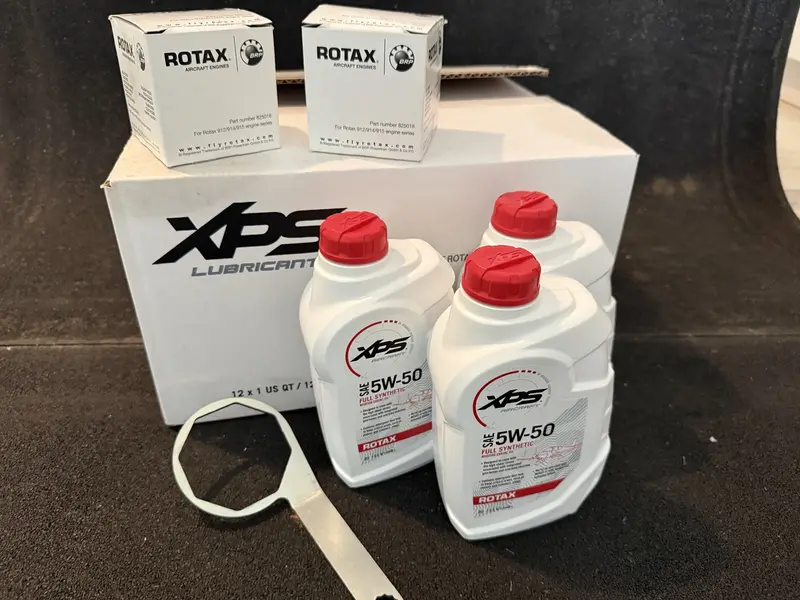
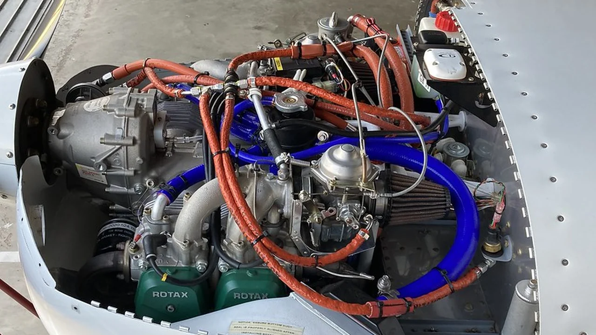
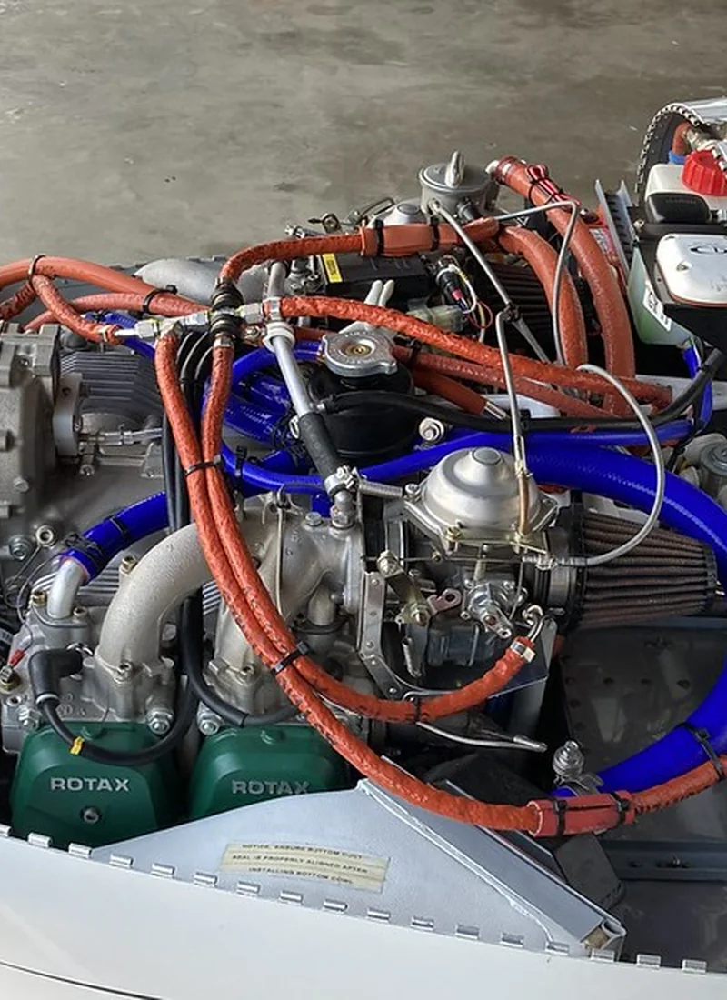
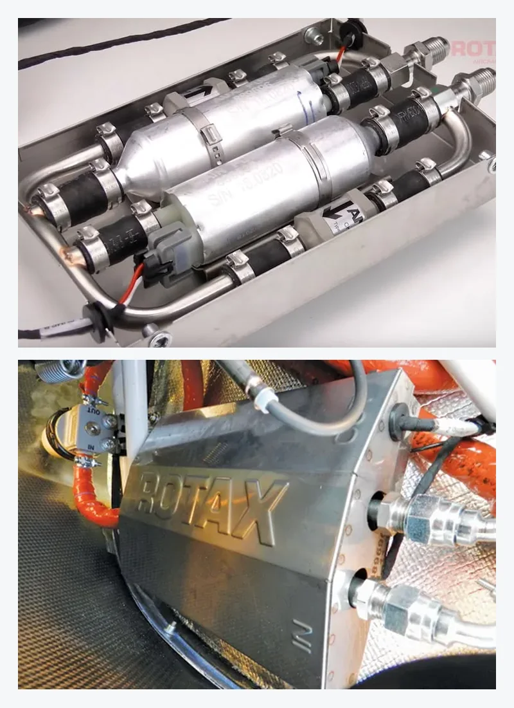
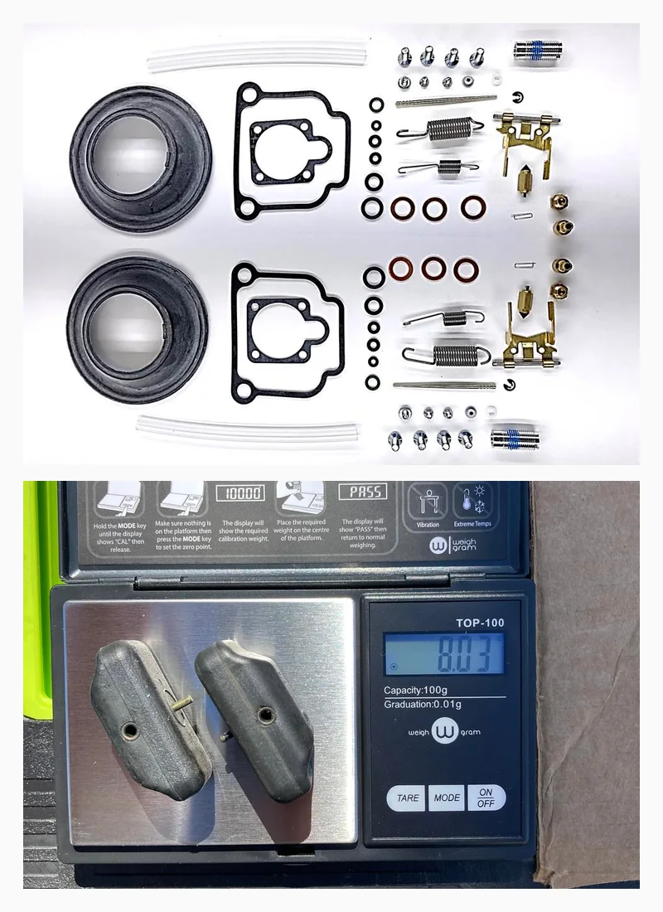
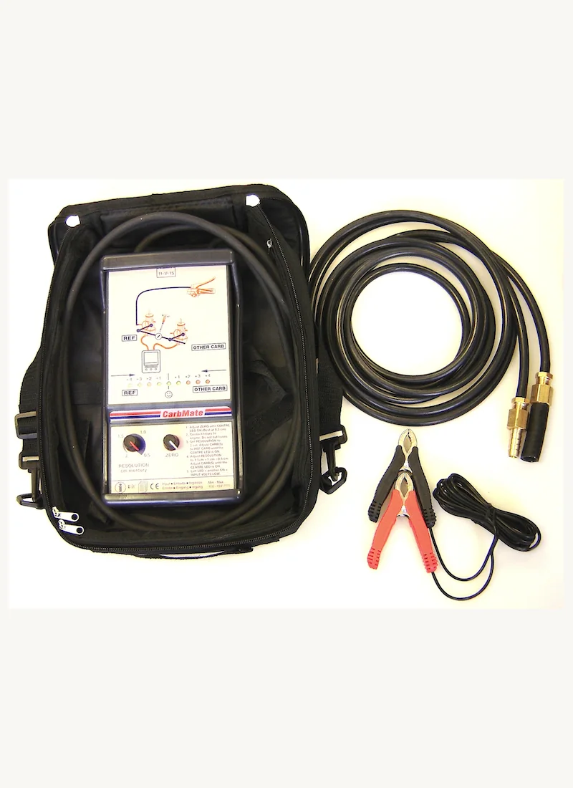
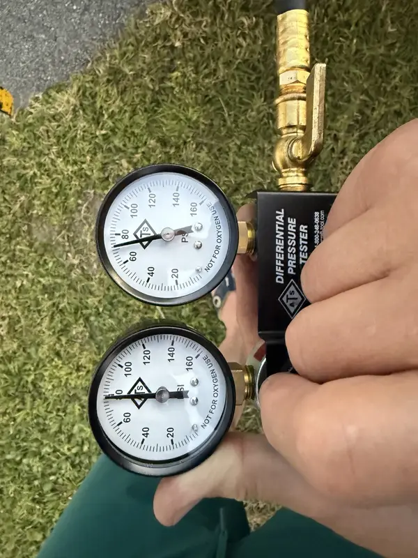

Scheduled Service
Oil, Filter & Spark Plug Service
Baseline scheduled-service planning with oil history, fuel use, plug condition, operating context, aircraft records, and current ROTAX/aircraft instructions reviewed together.
Records-first support for S-LSA, E-LSA, and experimental aircraft, with ROTAX 9 Series specialization, inspection planning, troubleshooting, prebuy, E-PROPS, and avionics support.
Start with the aircraft category, records, engine, propeller, installed equipment, symptom, or service goal. Intake narrows the path before parts, travel, or scheduling are treated as settled.

Genuine ROTAX Parts Focus
Genuine ROTAX parts are used where specified and appropriate. Final selection follows the aircraft, engine series, current instructions, installed configuration, and records.
Normal Light-Sport Maintenance
For S-LSA, E-LSA, and experimental aircraft, inspection planning starts with category, operating limitations, maintenance manual, equipment list, engine records, prior entries, and owner goals.
Lima Charlie Aero supports records-first inspection planning, routine service coordination, squawk review, ROTAX-related service items, and documentation discipline.
Choose the Lane First
Start with the closest support lane. Lima Charlie Aero confirms the aircraft, category, engine series, hours, records, recent work, and current instructions before narrowing the work path.
Use these photo-backed paths after choosing the primary lane. Each path stays tied to the aircraft, engine series, current manuals, records, recent work, and installed system.

Baseline scheduled-service planning with oil history, fuel use, plug condition, operating context, aircraft records, and current ROTAX/aircraft instructions reviewed together.

Fuel, oil, coolant, intake rubber, clamps, routing, leak-source review, refill, run, leak-check, synchronization when disturbed, and documentation as applicable.

Fuel pressure, lines, tanks, filters, pumps, clamps, contamination, routing, fuel type, operating conditions, and recent maintenance are reviewed as one aircraft system.

Charging behavior, voltage-regulator connections, grounds, wiring support, sensor/EMS behavior, and ignition or ECU context are separated before a component is blamed.

Bing 64 carburetor planning can include gasket and diaphragm condition, socket context, float weight checks, bowl condition, fuel history, synchronization needs, and current ROTAX/Bing instructions.

Mechanical and pneumatic synchronization, where applicable, are reviewed with throttle-cable condition, idle quality, vibration, starting behavior, recent rubber work, and carburetor context.

Cylinder-sealing results are treated as a condition baseline tied to test conditions, current instructions, engine history, prebuy context, and inspection records.

Measured vibration, RPM range, propeller condition, gearbox history, mounting, recent work, and engine behavior are reviewed together before conclusions are drawn.

Aircraft-first E-PROPS selection review, order coordination, setup, inspection, warranty claims, repair, installation planning, S-LSA authorization review, and vibration follow-up where aircraft and engine fitment support it.
Symptom Routing
If the aircraft is showing a symptom, start with the closest condition below. Intake sorts whether the issue belongs in fuel delivery, ignition, cooling, carburetion, vibration, gearbox, rubber, records, or installation review.
Additional Planning Paths
Use these paths when the primary need is records, prebuy, installation context, avionics/electrical planning, S-LSA/E-LSA status, or specialty support.
Owner Intake
Send the N-number or tail number, aircraft location, engine series, current symptom or service goal, recent work, and relevant records. The first step is choosing the correct support path before parts, labor, or scheduling are treated as settled.